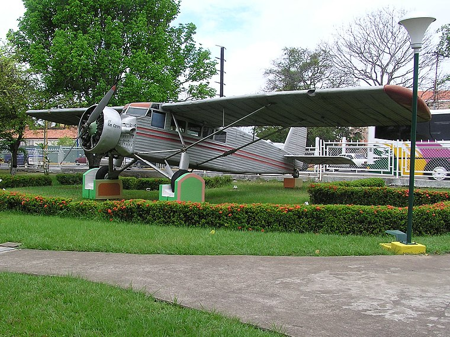
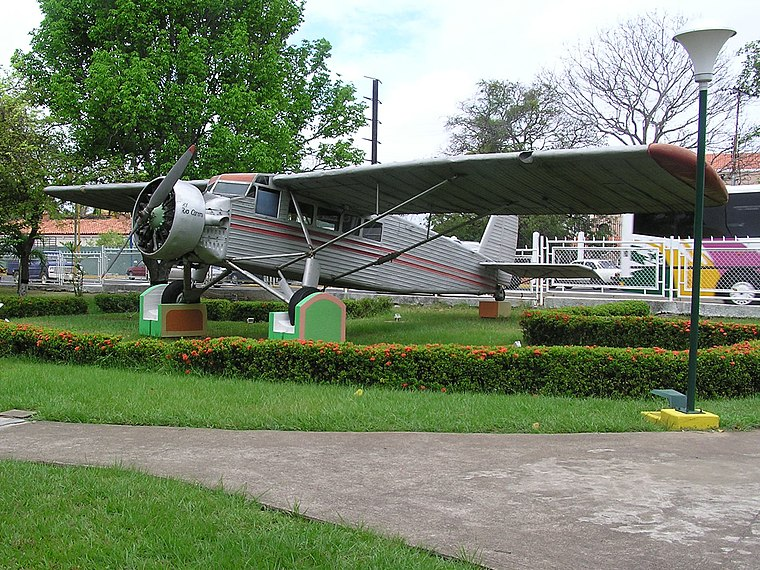
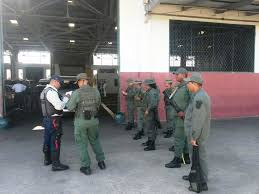
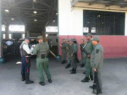

Ubicaciòn
Comando Fluvial. Es un edificio en el Municipio Heres, Bolívar que se localiza en Paseo Orinoco. Comando Fluvial se encuentra cerca de Mercado La Carioca, así como del parque de Rafael Urdaneta.
Lugar notable en el área:
Aeropuerto Nacional General Tomás de Heres: Es un aeropuerto venezolano ubicado en la ciudad de Ciudad Bolívar, Estado Bolívar en la Guayana venezolana y próxima al Río Orinoco. Aeropuerto Nacional Tomás de Heres se encuentra a 2½ km al sur de Comando Fluvial.
Objetivos de la Institución
• Proteger y salvaguardar la soberanía y los intereses nacionales en las zonas fluviales de Venezuela.
• Garantizar la seguridad de las personas y las embarcaciones que navegan por los ríos y afluentes del país.
• Participar en operaciones conjuntas con otras instituciones de seguridad para combatir el contrabando,
el narcotráfico y otras actividades ilícitas en las vías fluviales.
• Promover el desarrollo y la integración de las comunidades ribereñas a través de acciones sociales
y programas de apoyo.
• Fomentar la conciencia ambiental y la protección de los recursos naturales de los ríos y sus alrededores.
Galeria

.jpg) 

.jpg) 
